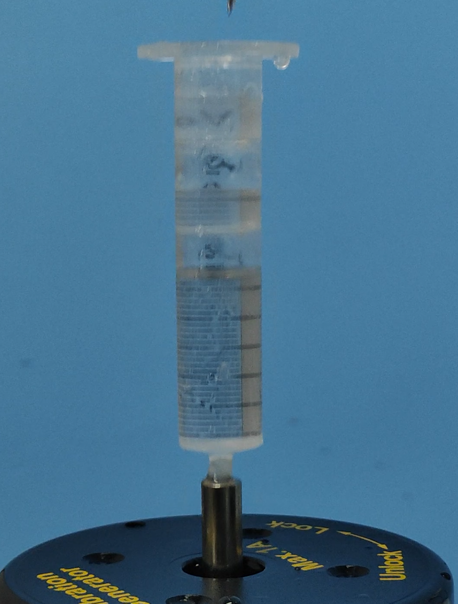
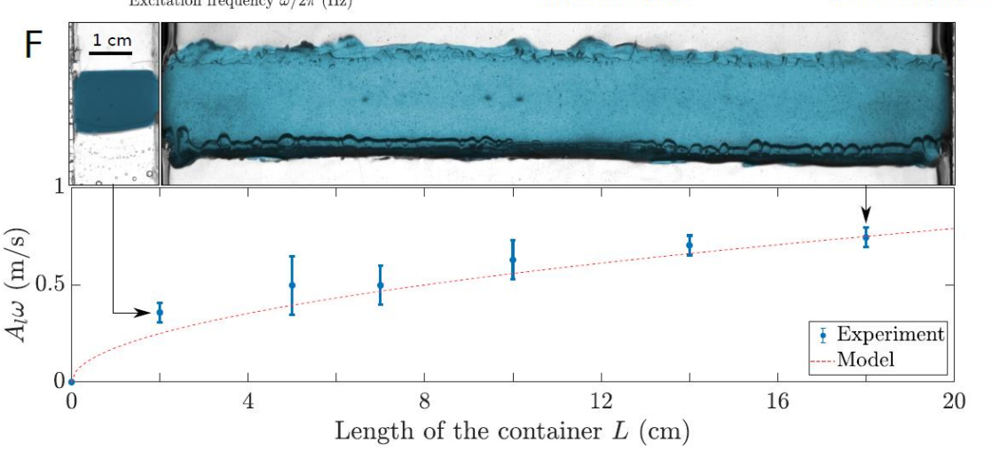
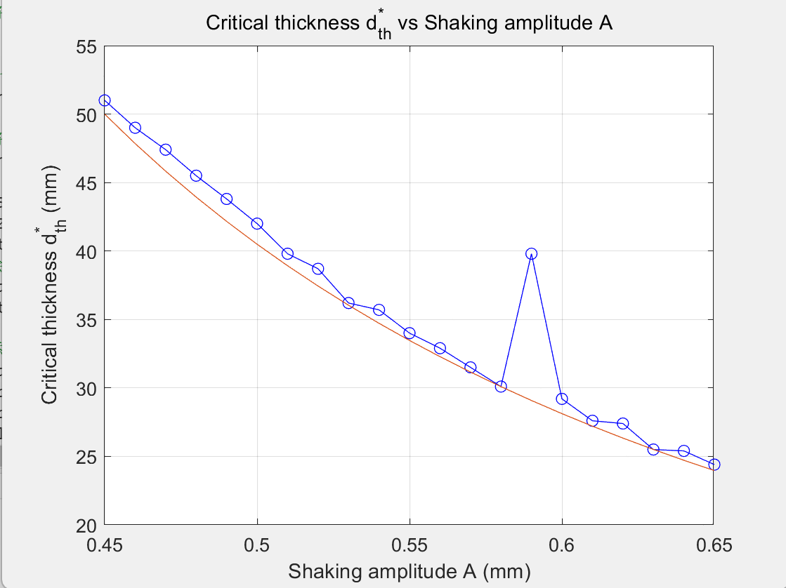
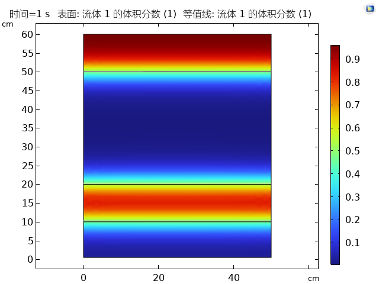
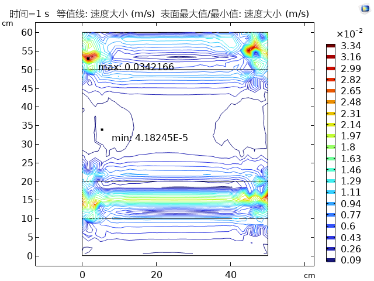
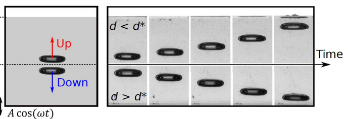

| 课程 | 数学物理方法——综合实践2 |
| 研究课题 | 垂直振荡容器中流体悬浮（Levitating Fluid）的物理机制与参数影响 |
| 核心方法 | 理论推导 / 硅油振荡实验 / COMSOL Multiphysics多相流仿真 |
| 关键词 | Rayleigh–Taylor不稳定性 / Kapitza效应 / Bjerknes力 / 法拉第不稳定性 |
当部分装满液体的容器进行垂直振荡并在底部注入空气时，液体可以稳定地"悬浮"在空气层之上。这一反直觉的现象涉及流体动力学与多相流稳定性的核心问题。2020年Apffel等人在Nature上发表的研究表明，通过精确校准的垂直振荡，不仅可以使液体层悬浮，甚至可以在悬浮液体的下界面实现"倒置浮力"——物体能够在液体下方倒挂漂浮。
课题要求系统研究以下因素对流体悬浮现象的影响：
当密度较大的流体位于密度较小的流体上方时，界面会发生Rayleigh–Taylor（RT）不稳定性。在静态情况下，液体位于气体下方时的正常界面满足重力–毛细管色散关系：
其中ω0为自然振荡频率，k为波数，γ为表面张力系数，ρl为液体密度。重力和毛细力均为正值，界面稳定。
当液体位于气体上方（倒置构型）时：
对于小波数k（长波），重力项-gk占主导，使ω02(k)<0，界面扰动随时间呈指数增长，液体最终坍塌。最不稳定的波数k^*由ω02(k)取极小值确定，对于大波矢量（短波），毛细力占主导并具有稳定作用。
实验体系的核心思想类比卡皮察倒立摆（Stephenson–Kapitza pendulum）：通过高频垂直振荡在时间平均意义上产生"振动力"，从而稳定原本不稳定的倒置构型。
假设液体受到垂直振荡zb(t) = Acos(ω t)，液体的等效加速度为：
将线性化的Bernoulli方程应用于界面变形zeta，得到受迫振子方程：
其中A1为液层的振荡幅度。按照Kapitza分析方法，将zeta分解为慢分量zetas与快分量zetaf：
对方程取时间平均（利用langlecos2(ω t)rangle = 1/2），得到慢分量的有效运动方程：
右端项-(k2A12)/(2)ω2zetas类比弹簧恢复力，是振动引起的平均稳定化效应。当zetas偏离平衡位置时，该项提供抑制力，阻止界面变形进一步发展。
稳定化条件推导：为使倒置界面稳定，振动稳定化项必须克服重力不稳定项：
对于不稳定模式ω02(k)<0，且小k时|ω02(k)|≈ gk，简化得：
对于横截面积尺度为L的容器，可激发的最小波数为kmin = π/L，因此必须满足：
该条件给出了实现悬浮所需的最小激励速度，且与容器横截面长度L的平方根成正比。
在振荡液柱中，气泡受到加速度调制geff和压强调制P(t)的联合作用。对气泡体积进行泰勒展开分析表明，除了常规的阿基米德浮力外，还存在额外的Bjerknes力——一种由压力梯度振荡引起的时间平均力。
气泡的平衡方程考虑以下力的贡献：
实验表明气泡的临界下沉深度d^*与振幅A的关系满足：
其中特征体积C与气泡半径的平方和体积调制有关。高粘度液体不容易出现法拉第不稳定性，且Basset力会减弱浮力，有利于气泡保持稳定。
在悬浮液层的下界面，振动不仅抑制了RT不稳定性，还产生了"负重力"效应。浮体在振动液体界面上的动态稳定条件为：
当振动足够强时，动态稳定化项α使原本为负的有效势能变为极小值，物体可以在悬浮液体的下界面"倒置漂浮"。
预实验采用注射器容器验证基本原理：
预实验结果表明，注射器容器的横截面积较小，振动条件接近但未完全满足稳定化阈值。

实验器材包括：有机玻璃容器、克拉尼图形演示仪振动台、波形发生器、功率放大器、硅油/甘油（100 cst）以及注射器。判定标准为：
控制注入悬浮气体体积约1 mL，改变振动频率范围70–250 Hz。实验发现存在一个临界频率，低于该频率时液层无法保持悬浮，高于该频率时稳定性随频率增大而增强。在更高频率区间，当达到法拉第不稳定性阈值时，界面会出现反对称模式——空气层体积不再恒定，上层液体在摇摆中最终坍塌。
保持不同横截面容器中液面高度一致，实验验证了理论预测A1ω > √2gL/π：横向尺度L越大，所需激发速度A1ω越大。实验数据与模型曲线A1ω = √2gL/π吻合良好。

L与临界激发速度A1ω的关系：实验数据（蓝点）与理论模型（红色虚线）对比" onclick="openLightbox(this)">改变空气注入深度测定临界深度d^*。实验表明临界深度与1/A2拟合良好，验证了理论预测公式中振幅A的反比平方依赖关系。

结合理论分析，使用COMSOL Multiphysics进行二维多相流仿真建模，前提条件包括：
仿真分别计算了70 Hz和100 Hz两种频率下的流场状态，与实验现象定性吻合：低频时悬浮不稳定，高频时气液界面保持平整。
仿真中改变容器横截面尺寸，大面积容器需要更高的激发速度才能维持悬浮，与理论公式A1ω propto √L一致。
仿真比较了不同注射深度的情形：注射较深时气泡能够稳定悬浮，注射较浅时气泡趋于上浮。

t=1 s），清晰显示气–液界面位置" onclick="openLightbox(this)">对仿真结果的进一步分析揭示了两个重要特征：

实验中还观察到气泡在振荡液柱中的典型行为：当注射深度d

d